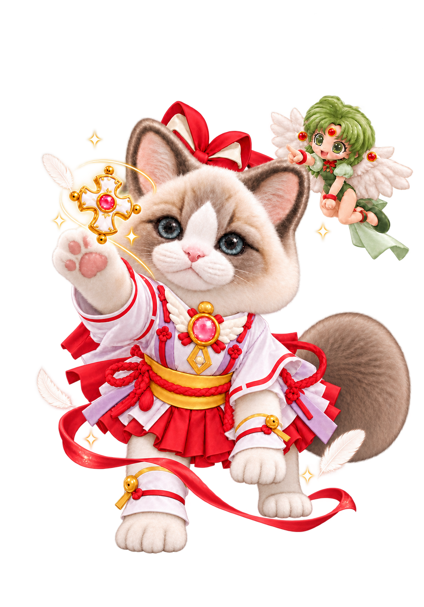
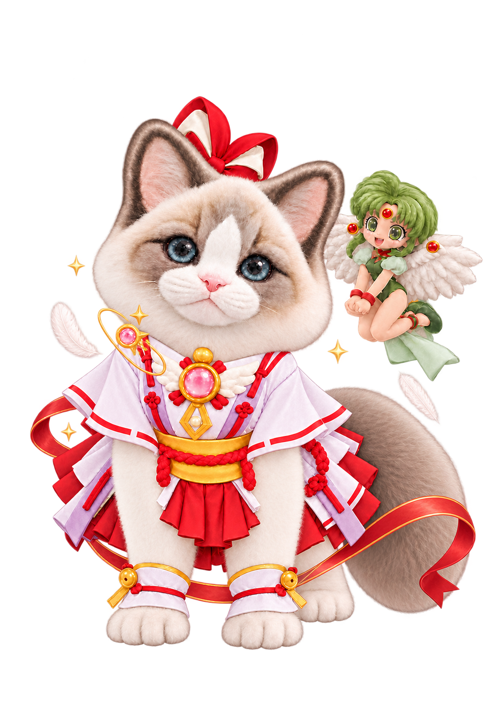
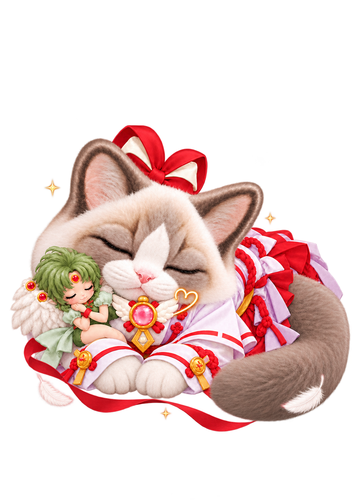
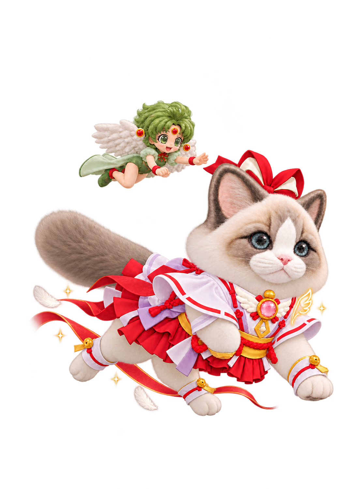
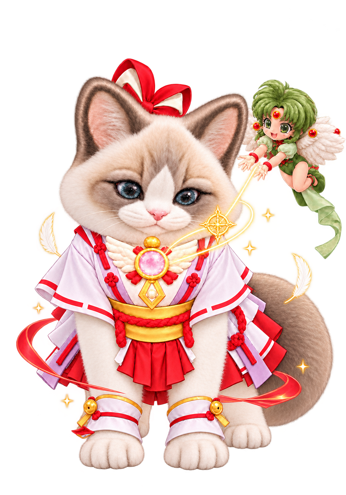
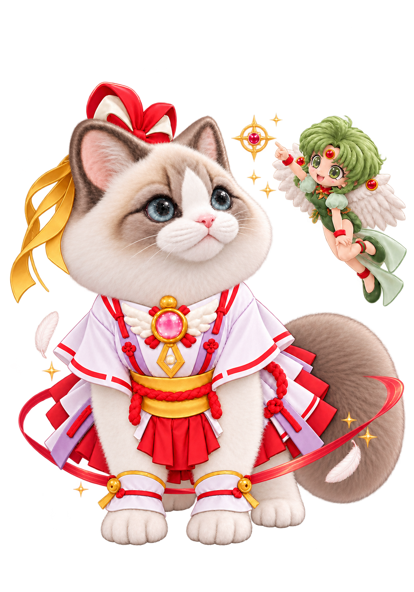

잔느 레토 · 정지 시안01 · 기본 대기동작 중심 이펙트 · 투명 배경02 · 작업 · 봉인동작 중심 이펙트 · 투명 배경
03 · 검토 · 체크메이트동작 중심 이펙트 · 투명 배경
04 · 입력 대기동작 중심 이펙트 · 투명 배경05 · 오류 · 봉인 실패동작 중심 이펙트 · 투명 배경06 · 완료 · 승리 인사동작 중심 이펙트 · 투명 배경07 · 점프 · 도약동작 중심 이펙트 · 투명 배경
08 · 수면동작 중심 이펙트 · 투명 배경
09 · 이동 · 오른쪽동작 중심 이펙트 · 투명 배경10 · 이동 · 왼쪽동작 중심 이펙트 · 투명 배경
11 · 작업 · 로사리오 충전동작 중심 이펙트 · 투명 배경12 · 작업 · 봉인 발동동작 중심 이펙트 · 투명 배경
13 · 검토 · 표적 확인동작 중심 이펙트 · 투명 배경14 · 완료 · 감사 인사동작 중심 이펙트 · 투명 배경15 · 점프 · 준비동작 중심 이펙트 · 투명 배경16 · 수면 · 졸음동작 중심 이펙트 · 투명 배경